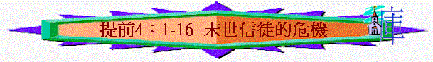

引言
4:1題到『聖靈明說，在後來的時候』似乎講到在末後的日子，必會出現一些危機，你認為在這末世的時代，青少年信徒面對甚麼危機？一．末後的危機（V．１－５）
１．V．１題到有甚麼危機？ 單從V.１節中有甚麼令我們驚訝的地方？
２．撒但用甚麼之法
信徒？ 是否單一種方法？（V．１－２）３．V．２題到『說謊之人』，他們有甚麼特別或特質？ 試解釋。
４．他們的說法有甚麼不對的地方？ 舊約不是說有些食物不潔，是不潔淨的嗎？
５．V．５『都因神的道和人的祈求，成為聖潔了』何解？
６．在你的觀察中，有沒有一些團友出現一些危機或轉變（不好的）令你感到
驚悚？你知道後，怎樣處理？
二．處理的方法（V．６－１１）
１．保羅教提摩太怎做？ 何謂『提醒』？ 如這樣做就會怎樣？
２．『在真道的話語．．．．得了教育』是甚麼意思？ 換言之，一個聽了很多真理的人，但他不提醒人，他是一個怎樣的人？
３．對羊群要提醒，對自己又要如何？
４．何謂『棄絕』？ 『世俗的言語』？ 『老婦荒渺的話』？ 這些話若不棄絕，有甚麼問題？
５．在今天生活中，在你週圍或羊群多不多這些話? 對自己／對羊群有甚麼影響？
６．另外，在自己方面上，除了棄絕，還要作甚麼？ 何謂『敬虔』？ 『操練』？在實際生活中可怎樣操練？ 有甚麼令人驚訝的好處？
７．V．１１題到更要作甚麼？ 『這些事』是指甚麼？ 『吩咐人』和『教導人』及『提醒人』有甚麼不同地方？ 你認為自己最難是那一方面？
三．教導的樣式
１．如真是要吩咐人、教導人，V．１２先題到要先怎樣？ 試解釋『不可叫人小看你年輕』你認為人會因你甚麼表現會小看你年輕呢？
２．V．１２題到在５方面上要作榜樣，單看這五方面，你覺得有甚麼特別的地方？
３．V．１３保羅又教提摩太怎樣？『宣讀』、『勸勉』、『教導』有甚麼不同？『為念』
有甚麼意思？
４．V．１４『不要輕忽所得的恩賜』你覺得神有沒有賜恩賜給你？ 是那些?
５．V．『這些事』指甚麼？ 保羅要提摩太怎樣作？ 有甚麼後果？
６．最後，保羅有甚提醒？（V．１６）試解釋『因為這樣行，又能救自己，又能救聽你的人。』
總結：１．保羅教提摩太，為為一個牧養羊群的人，有甚麼主要工作？
２．作為一個好的教導者，他這個人又要怎樣？
３．在今日查經中，對你有甚麼提醒？